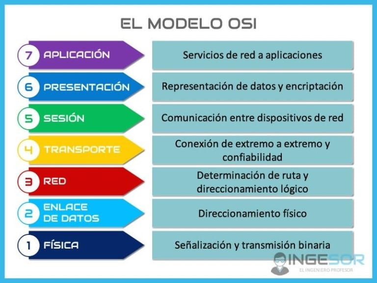
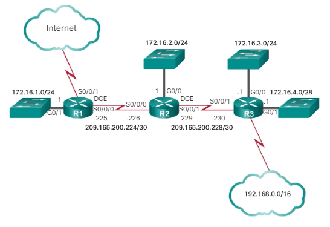

Modelo Osi
El modelo OSI es un marco conceptual que describe cómo se comunican los dispositivos en una red.
Capas del modelo OSI
- 1.capafisica: La capa física es la responsable de la transmisión de datos a través del medio físico.
- 2.capade enlace: La capa de enlace de datos se encarga de la transmisión de datos entre nodos en una red.
- 3.capade red: La capa de red es responsable de la routing y el direccionamiento de los datos.
- 4.capade transporte: La capa de transporte garantiza la entrega confiable de datos entre aplicaciones.
- 5.capade sesion: La capa de sesión establece, mantiene y finaliza las sesiones de comunicación entre aplicaciones.
- 6.capade presentacion: La capa de presentación se encarga de la representación y codificación de los datos para que puedan ser comprendidos por las aplicaciones.
- 7.capade aplicacion: La capa de aplicación proporciona servicios de red directamente a las aplicaciones del usuario final, como correo electrónico, transferencia de archivos y navegación web.

Enrutamiento IPV4
el enrutamiento en IPv4 es el proceso de determinar la ruta que deben tomar los paquetes de datos para llegar a su destino en una red.
Mascara de subred
La dirección IP es la dirección que te asigna tu ISP, empresas que dan acceso a Internet como Claro, Tigo,etc. y sirve para identificarte dentro de Internet cuando te conectas. Nadie puede navegar por la red sin una IP, y ninguna página web puede estar online si no tiene una IP asociada
como funciona el enrutamiento
El enrutamiento en IPv4 funciona mediante la utilización de tablas de enrutamiento que contienen información sobre las rutas disponibles en la red. Cuando un paquete de datos llega a un router, este lo examina y determina la mejor ruta para enviarlo hacia su destino.
